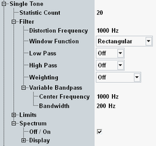
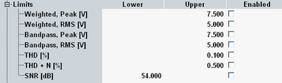
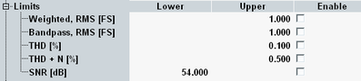

The following settings are specific for single tone measurements. They can be configured separately for analog and digital measurements. The description applies to both.

Configures the statistic count for single tone measurements. This parameter can also be configured within the general settings, see "General Settings (Analog)" and "General Settings (Digital)".
Remote command:The "Distortion Frequency" is the reference frequency of the single tone measurement. Set this parameter to the fundamental frequency of the AF signal. If the measurement is coupled to a generator, the frequency configured within the generator settings is used and displayed here for information.
Remote command:Selects a window function for the single tone spectrum measurement. The spectrum measurement uses a fast Fourier transform. The window function is applied to the raw data in the time domain, before performing the fast Fourier transform. An appropriate window function reduces spectral leakage and level errors.
The following table assists you in selecting the appropriate window function.
Window type | Spectral leakage | Amplitude accuracy | Frequency resolution |
|---|---|---|---|
Rectangular | Poor | Poor | Best |
Hamming | Fair | Fair | Good |
Hann (Hanning) | Good | Fair | Good |
Blackman-Harris | Best | Good | Fair |
Flat-Top | Good | Best | Poor |
The settings configure the individual filter stages of the AF analyzer. For a description of the filter types, see "AF Filter Settings".
Remote command:Analog measurement:
Digital measurement:
This section configures upper or lower limits for most single tone results displayed in the result table.
By default all limits are disabled.

This section configures upper or lower limits for most single tone results displayed in the result table.
By default all limits are disabled.

Enables or disables the measurement of single tone spectrum results and shows or hides the result diagram.
Remote command:These settings configure the axes of the spectrum diagram, select which traces are displayed and configure the markers.
These settings can also be accessed via hotkeys. See "Modifying Diagrams" and "Using Markers".
Remote command:Not applicable